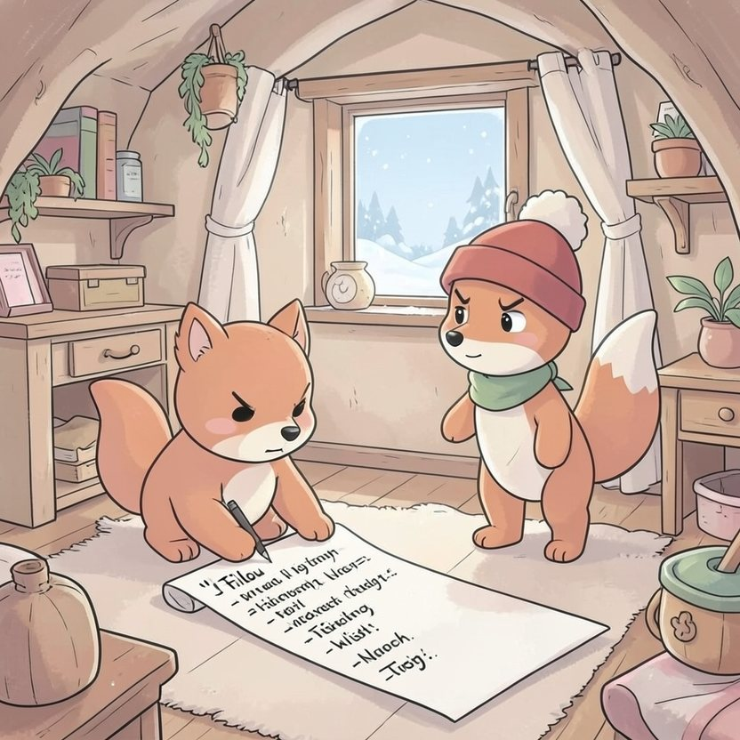

Titistoire › Les Étoiles (3-6 ans)
Filou et le traîneau en panne
Une histoire de Filou le renard pour parler de : le plaisir de donner.

▶ Écouter et regarder l'histoire
Gratuit, sans inscription : la voix lit, le texte suit mot à mot, les images tournent comme dans un album.
Le texte de l'histoire
Noël approche dans la forêt des Quatre-Chênes. La neige a tout emmitouflé de blanc, et Filou, le crayon à la patte, allonge sa liste. Elle serpente déjà sur trois mètres de plancher.
« Un vélo. Un tambour. Un bateau à voiles. Un deuxième vélo, au cas où. Et la plus grosse boîte de chocolats du monde… » Ses yeux pétillent.
« Et pour les autres, tu demandes quoi ? » s'étonne Noisette, les poings sur les hanches. Filou hausse les épaules. « Les autres ? Ils n'ont qu'à écrire leur liste ! »
La nuit de Noël, Filou ne ferme pas l'œil. Tapi derrière la cheminée, sa petite lampe à la patte, il guette. Ses cadeaux, il veut les voir arriver. Tous. En premier.
Minuit sonne. Soudain, dehors : cling, cling, cling… BOUM ! Quelque chose dégringole dans la neige. Filou dresse l'oreille. Puis une grosse voix ronchonne : « Saperlipopette ! »
Filou bondit à la fenêtre. Dans la clairière, un traîneau a piqué du nez dans une congère, un gros tas de neige soufflé par le vent. Tout près, un très vieil ours blanc en manteau rouge se frotte le dos.
« Le Père Noël ! » Filou en reste bouche bée. Le vieil ours a l'air fourbu, affalé sur son traîneau. Et son renne, le brave Gustave, s'est tordu la patte en atterrissant.
« Me voilà bien ! soupire le Père Noël en écartant les pattes. Toute la forêt à livrer avant l'aube, et plus personne pour tirer mon traîneau. »
Filou lorgne la hotte, qui déborde. Tout en haut trône un énorme paquet au ruban rouge, avec son nom dessus. Il suffirait de tendre la patte, et de filer se recoucher.
Mais les moustaches du Père Noël tremblotent. Alors Filou s'entend déclarer, tout étonné : « Je peux tirer, moi. Facile ! Je suis petit, mais je connais tous les raccourcis. »
Il enfile le harnais. Han ! C'est lourd comme une armoire. La neige crisse, le traîneau s'ébranle, puis glisse entre les sapins. Assis à l'arrière, le vieux Gustave indique le chemin du bout du sabot.
Première maison : celle de Noisette, avec sa porte ronde. Le Père Noël confie un petit paquet à Filou. « Va, renard, chuchote-t-il. Sans un bruit. »
Filou se faufile sur la pointe des pattes. Noisette dort à poings fermés, roulée en boule. Il dépose le paquet tout contre son oreiller. Elle sourit dans son sommeil, comme si elle savait.
Alors il se passe une drôle de chose dans la poitrine de Filou. C'est doux, c'est tiède, comme une gorgée de chocolat chaud. « Encore ! » souffle-t-il.
Chez Nestor, un pot de miel enrubanné. Chez Rosie, une paire de patins. Chez Plume, un livre aussi gros qu'elle. Et à chaque paquet déposé sur un seuil, la gorgée de chocolat chaud revient.
Il ne reste plus qu'une maison : la tanière de Loupiot, tout au bout du chemin des sapins. Le Père Noël farfouille dans sa hotte. Il farfouille encore. Sous sa barbe, le voilà qui pâlit.
« Il manque un paquet, murmure-t-il. Tombé quand j'ai atterri, sans doute… Pauvre petit loup. C'est son tout premier Noël. »
Au fond de la hotte, il ne reste qu'un seul cadeau. Le plus gros. Celui au ruban rouge, où il est écrit : Filou.
Filou serre son paquet contre lui. Rien qu'à la forme, il devine le vélo. Celui qu'il espère depuis un an. Puis ses yeux glissent vers la petite tanière de terre, sans une seule guirlande.
Il sort son crayon. D'un trait, il barre « Filou ». Puis, en tirant la langue, il écrit : « Loupiot ». Et il porte le paquet à l'intérieur, à pas de velours.
Quand il ressort, les pattes vides, le Père Noël ne prononce pas un mot. Il pose simplement sa grosse patte sur la tête du renard. Et le jour se lève, tout rose, sur la neige.
Le matin de Noël, sous le sapin de Filou, pas de vélo. Seulement un paquet minuscule. Dedans, un grelot doré du traîneau, et un petit mot : « Pour mon meilleur renne. »
Dehors éclatent des cris de joie. C'est Loupiot qui passe sur un vélo rouge, en zigzaguant, parce qu'il ne sait pas encore tenir en équilibre. « Filou ! Regarde ! Le Père Noël a pensé à moi ! »
Filou noue le grelot à son écharpe et galope derrière le vélo pour le tenir. Cling, cling, cling. L'année prochaine, sa liste sera beaucoup plus courte. Mais il y aura beaucoup plus de noms dessus.